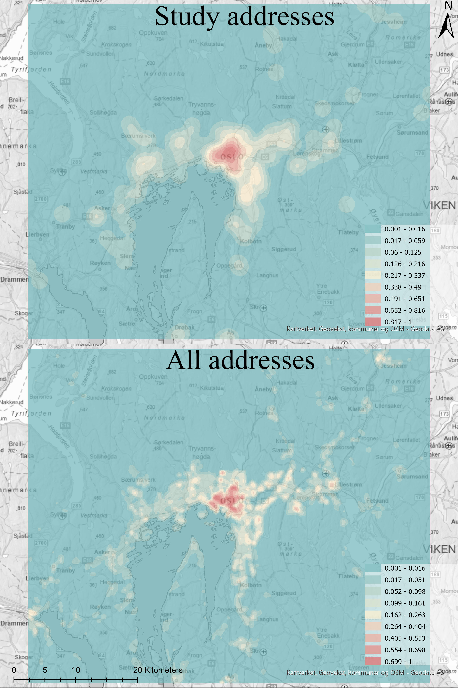
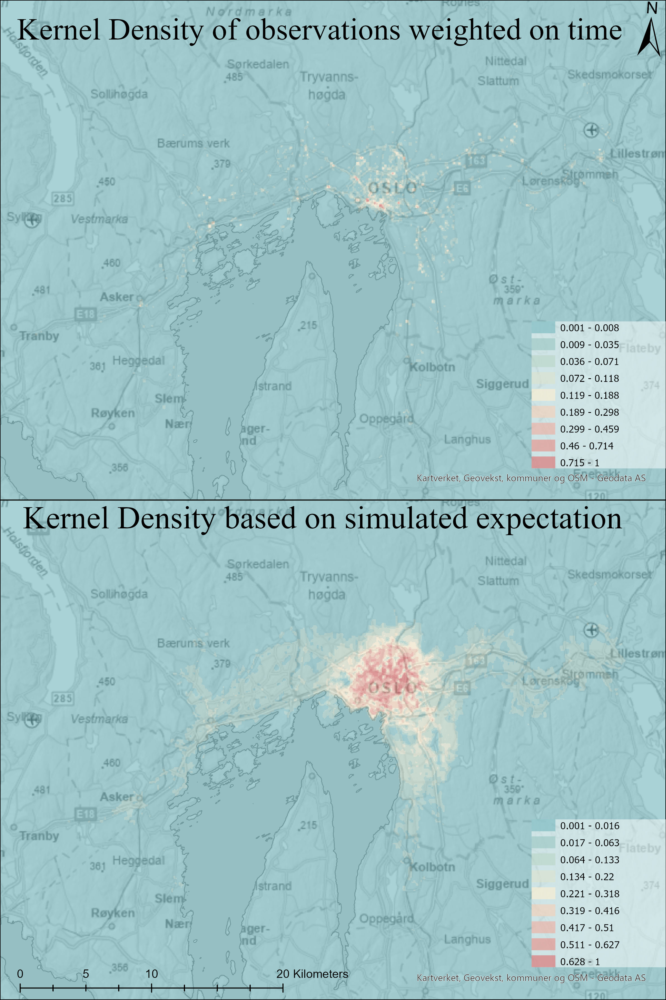

Activity patters from GPS data (work in progress)
Published on March 12th, 2023
In my master thesis I looked at movement of people and how much time people used in spaces, using GPS data. I wanted to look at this from the perspective of places. So the maps I am showing in this blog are from the perspective of the raster cells of a resolution of 50m, and how much time has been occupied by people in the time frame, and then compared to what could be expected. Throughout the master I have used a kernel density analysis to create the raster data and the cells I am using to study as places. A kernel density is creating a form of a heat map.
Before I started my analysis I first wanted to check the spatial distribution compared the general population distribution in the Oslo metropolitan area. I did not have data for the population distribution, but I used a address list by apartment level from Kartverket (Norwegian Mapping Agency) as a proxy for population distribution. The reason I wanted to do this is because I wanted to see how representative the respondent’s spatial distribution was. As seen in the map below omparing the spatial distribution of the respondents with all address points it showcases that the the spatial distribution is given it's small sample size relative representative.
 This is the overview using a kernel density of the home addresses of the 226 respondents, compared to the address dataset on apartment level from Kartverket. As a comparison of spatial distribution of the respondnetsCreating the model to simulate the potential for travel
The next step of the process was to create a model which could simulate the potential activty of the respondents to better compare the use of space in Oslo. Due to security reasons the address points of respondents and trip information was separeted. This resulted in me having to use the average trip lenght (3885.9m) as the distance for the service area anaylsis I did for each address.
The iterating model done for each address of the 273 respondents to calculate their travel potential.The model iterates over the point file of the addresses of the 226 respondents. For each address it adds it as a location for a Service Area network analysis. It then export the line file from the service area. I wanted to simulate how the GPS signal records the users position and is not a contious signal. I found the average distance between each GPS recording from the trips by calculating the average distance between each vertecies of the line polygons (33.9m). I then dissolved the lines from the service area and sampled points from this file every 33.9m using generate point along lines. Then I appended this feature to the output file.
The result of this model where a file with 4.129 million point. Similar to the GPS recordings from the respondents I made a Kernel Density analysis of the travel potential of the respondents to have a better comparison for the use of space in Oslo Metropolitian area.
 The result of Kernel Densities of the GPS observations of the respondants and their modelled potential travel area